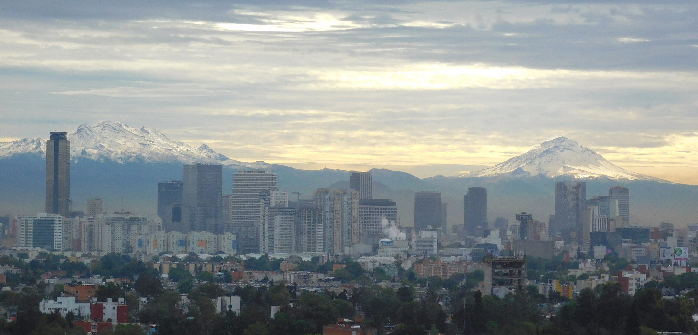
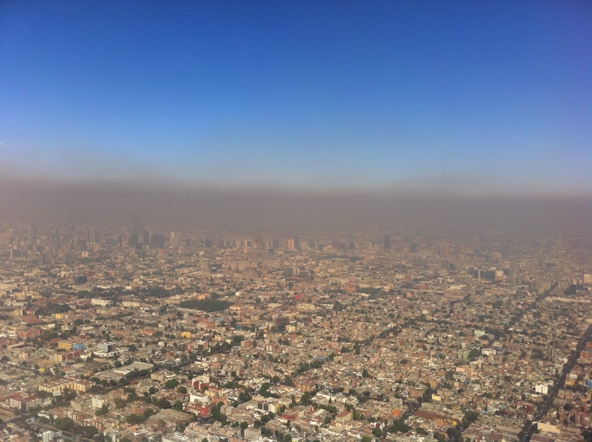
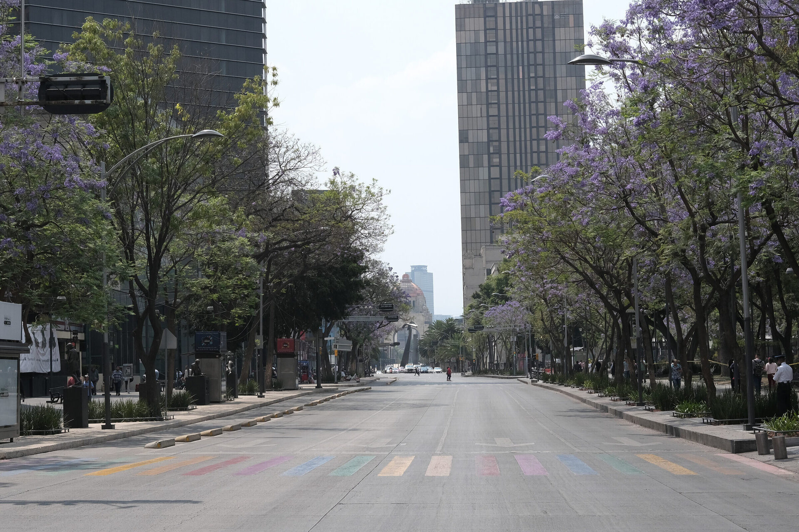
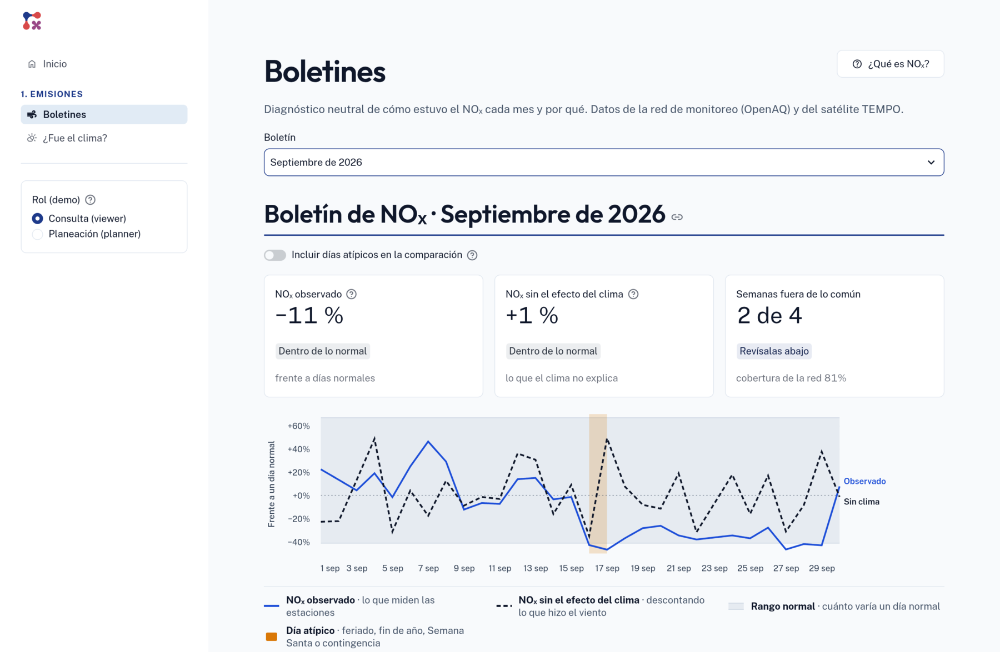

Equipo 39 · 2026


NOx·ML · Hub de Ciencia de Datos
¿fue el clima o fue la emisión?
Separar la emisión de NOx del clima en la Ciudad de México, con estaciones, un satélite y machine learning.
Isabella Arango · Isaí Ambrocio · Manuel Vázquez · Tec de Monterrey
01 · El problema
por qué importa el NOx
daña por sí solo
Irrita los pulmones y agrava el asma, sobre todo en niños.
delata la combustión
Sale junto con CO2, hollín y partículas: es la huella del escape.
forma otros contaminantes
Con el sol forma ozono; en el aire, partículas finas.
Y más allá de la salud
02 / 13
01 · El problema
cómo se mide hoy
el inventario
Medido en 2018
Publicado en 2021
3 años de retraso
el antes y después
Clima
Nivel
Veredicto
la misma medida
p. ej., Doble Hoy No Circula
En ambos casos la emisión bajó igual: lo que cambió fue el clima
03 / 13
01 · El problema
la tina de baño
Llave abierta · desagüe abierto: el nivel se mantiene
Cerramos la llave a medias: el nivel baja
El clima tapa el desagüe: el nivel sube aunque entre menos
Se destapa y vuelve a abrirse: regresa a su nivel
1
2
3
1
la llave
Lo que emite la ciudad: coches, fábricas
2
el nivel del agua
Lo que respiramos. Es lo único que miden las estaciones
3
el desagüe
El clima: el viento y la lluvia se llevan la contaminación
1 · Cerramos la llave: entra menos
2 · El clima tapa el desagüe: el nivel sube de igual manera.
Mirando solo el nivel, no sabemos quién lo movió
04 / 13
02 · La solución
tres fuentes, una respuesta
24 estaciones
El aire a nivel de calle
satélite TEMPO
NASA: una foto de la contaminación cada hora
clima
Viento, lluvia, temperatura
100 % datos públicos y gratuitos
05 / 13
02 · La solución
el gemelo del clima
dentro de la banda: fue el clima
fuera: ya no es el clima, es la ciudad
Lo esperado con ese clima (banda punteada)
Lo que pasó
Semanas · datos ilustrativos
06 / 13
02 · La solución
la pinn: de dónde viene
Zona que emite
Viento
≈ 10 km
PINN
red neuronal + leyes de la física
Aprende la física, no memoriza
Funciona con solo 24 estaciones
Una bocanada llega a varias estaciones; cada estación recibe humo de varias zonas. La PINN las desenreda.
07 / 13
02 · La solución
el examen: el confinamiento

Avenida Juárez, 6 de abril de 2020 · Foto: EneasMx, Wikimedia Commons, CC BY-SA 4.0
−50 %
caída de la emisión que vio el sistema
Banda punteada: lo esperado por expertos (−40 a −60 %)
Cuadro verde: lo que midió el sistema
08 / 13
02 · La solución
no inventa cambios y dice cuánto sabe
49 de 52
episodios reales con la causa correcta (claro: acierto, rojo: error)
18 % → 9 %
veces que se culpa a la ciudad de lo que fue el clima (gris: antes, verde lima: ahora)
siempre
cada cifra sale con su rango de confianza
09 / 13
03 · Impacto y futuro
si quitamos coches, ¿baja el ozono?
NOx
ozono
≈ igual
Por qué
en el centro, el ozono depende de otros vapores
Gasolina que se evapora, solventes, gas LP.
80 domingos comparados con días hábiles de clima parecido
10 / 13
03 · Impacto y futuro
qué cambia
Inventario cada 3 años
señal cada semana
Pilotos imposibles de evaluar
asistente para pilotos medibles
Adivinar si fue el clima
boletín público cada mes
Operarlo: ~6 mil pesos al mes · datos gratuitos

Boletín de septiembre de 2026 en la app: 2 semanas fuera de lo común, y el boletín dice por qué
11 / 13
03 · Impacto y futuro
posibles mejoras
↑ Más impacto
Primero
Pilotos en semanas alternas
Salud y equidad por zona
Separar tráfico e industria con CO
Datos de tráfico
Emisión por alcaldía
Otras ciudades bajo TEMPO
Viento más fino
Primero: barato y útil
Después
Gran apuesta
Más esfuerzo →
12 / 13
03 · Impacto y futuro
riesgos y lo que está en juego
Lo que aún no ve
- Cambios de 5–10 % en una sola temporada
- Toneladas exactas: siempre da un rango
- Que nadie lo use: necesita un responsable
Lo que está en juego
- Decisiones con evidencia, no a merced del clima
- Contingencias atacadas por la causa correcta
- −10 % de emisión del tráfico: cientos de muertes evitadas al año (orden de magnitud)
13 / 13
¿fue el clima o fue la ciudad?
ahora podemos saberlo.
Gracias · NOx·ML · Hub de Ciencia de Datos
Créditos
fuentes de las fotos
Portada · día limpio
Ukaizen
Wikimedia Commons · CC BY-SA 4.0
Portada · día con bruma
Fidel Gonzalez
Wikimedia Commons · CC BY-SA 3.0
Confinamiento
EneasMx
Wikimedia Commons · CC BY-SA 4.0
La captura del boletín (diapositiva 11) es de la app del proyecto. Mapas, diagramas e íconos: elaboración propia del Equipo 39.